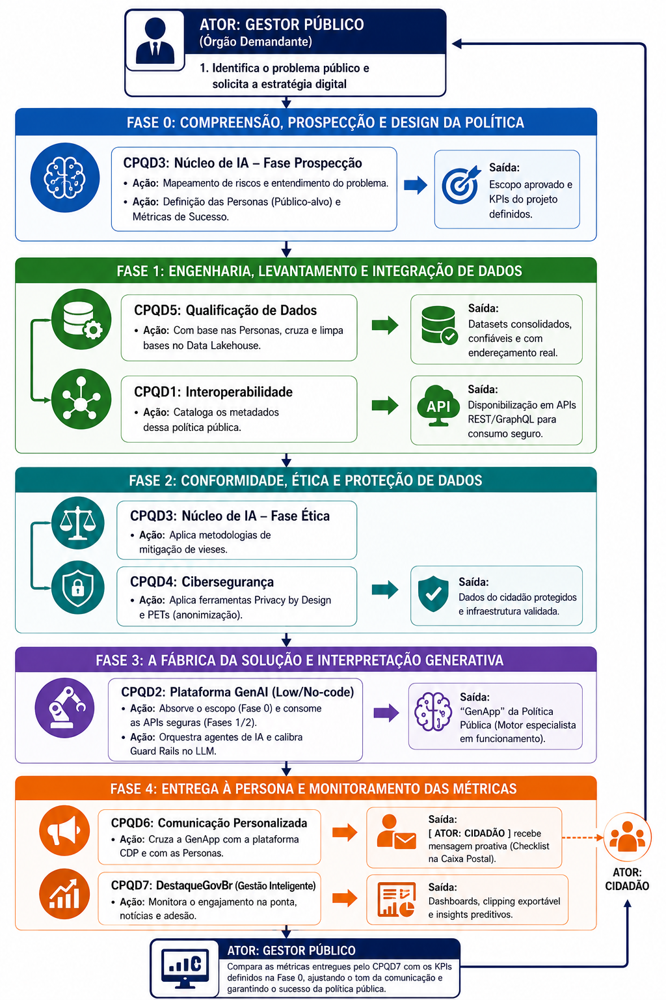

Da identificação do problema público à entrega personalizada ao cidadão — o fluxo completo de uma GenApp de Política Pública
Uma "GenApp" — aplicação de IA generativa especializada na política pública — que entrega valor personalizado ao cidadão e é monitorada em tempo real pelo gestor.
Órgão demandante. Identifica o problema, define KPIs, valida entregas e monitora resultados da política pública.
Papel: Dono do problema e do resultado
7 núcleos especializados que executam cada fase do processo — da prospecção à comunicação personalizada.
Papel: Motor técnico e operacional
Público-alvo da política pública. Recebe a entrega personalizada via canais digitais (Caixa Postal, app, SMS).
Papel: Beneficiário final e fonte de feedback
Diagrama completo do fluxo de geração da GenApp, desde a identificação do problema até a entrega ao cidadão.

O Gestor Público identifica uma necessidade e aciona o META3 Núcleo de IA para iniciar a fase de prospecção.
✅ Escopo aprovado e documentado
✅ KPIs do projeto definidos e mensuráveis
✅ Personas mapeadas com necessidades reais
✅ Riscos identificados e plano de mitigação
Sem clareza sobre o problema e as personas, a IA resolve a coisa errada. Esta fase garante que a tecnologia serve à política — não o contrário.
✅ Datasets consolidados e confiáveis
✅ Endereçamento real validado
✅ APIs seguras para consumo (REST/GraphQL)
✅ Metadados catalogados e documentados
Data Lakehouse centraliza dados brutos e processados. APIs expõem apenas o necessário, com controle de acesso granular por órgão e por política.
✅ Dados do cidadão protegidos (LGPD)
✅ Infraestrutura validada e segura
✅ Vieses identificados e mitigados
✅ Documentação ética completa
Nenhuma GenApp vai para produção sem passar por esta fase. A proteção do cidadão é pré-requisito, não feature opcional.